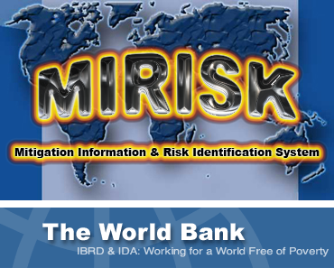

A Natural Disaster can destroy years of Development in a few seconds.identifying natural hazards affecting a region defining the kinds of infrastructure ("assets") that make up typical Development projects describing the vulnerability of these assets to natural hazards, and how vulnerability can be reduced analyzing the natural hazards and vulnerability data, to assess whether Projects should follow normal design practices, or whether the cost of some enhanced design for natural hazards is justified by the benefits (of avoided losses). |
NOTE: This is the beta release of MIRISK. Changes, updates and bugfixes will occur very frequently. Please provide feedback (one-time only) via the Feedback Tab, and enter your comments at any time at the MIRISK Wiki. NEW: MIRISK Tutorial. Please click HERE.  GFDRRGlobal Facility for Disaster Reduction and Recovery |
How to Use MIRISK1. Project Data: You can enter data for a new project, or resume a previously saved project. 2. Location/Hazard Data: You locate a component by zooming on a World Map of hazards, or entering lat/long or other information. You can use the map to see the degree of Earthquake, Wind, Flood or Volcano risk for a region. 3. Component (Asset) Data: You select the asset category (e.g. buildings) and class (e.g. Low Rise Reinforced Concrete) to view a description of the class, its vulnerability to various hazards and how to reduce (mitigate) the vulnerability. On this page you input asset value data (e.g. cost and project Benefit Cost Ratio, BCR), which is used for a benefit-cost assessment. 4. Analysis/Results: MIRISK calculates potential losses due to a natural hazard you select and estimates the cost of enhanced design for that hazard, to identify if enhanced design may be warranted, given the regional hazards for the project location and the value of the project. |
|
|